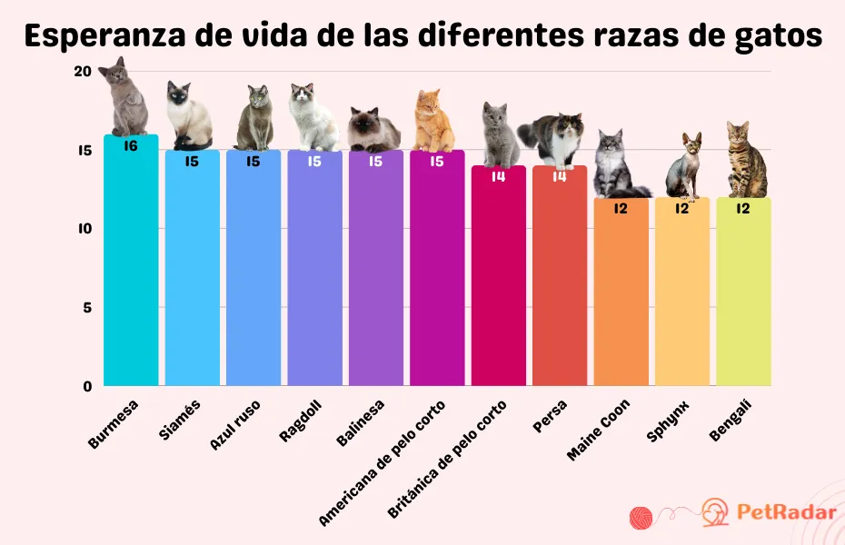

Hola, te dare un pequeño tour por esta pagina sobre gatos
Estas en esta pagina por una razón en concreto, TE GUSTAN LOS GATOS, o por lo menos tienes interes en ellos
¿Pero quienes son estos pequeños felinos que han estado con nosotros y por que estan con nosotros?
La verdad es que estos pequeños estan con nosotros por los beneficios que en un principio se les bridaban,
en especial cuando viviamos en chozas y almacenabamos grandes cantidades de grano gracias a la agricultura,
pero surgio el problema mas molestos de todos que fueron los roedores, pero a todo esto...
¿Cuales son esos beneficios?
Facil, comida y un lugar seguro de depredadores mas grandes que ellos, ellos cazaban a los roedores,
asi evitaban la perdida de grano y el felino tenia su comida sin mucho esfuezo ya que en este tiempo se podria decir que era un paraiso de roedores
Un dato que de seguro no conocias es: ¿como los gatos llegaron tan lejos o como se expandieron?
Es curioso saber que los gatos llegaron a cada parte del mundo, pero la pregunta es: ¿como llegaron?
bueno, es sencillo de explicar, resulta que los gatos eran muy amados por los egipcion ya que controlaban
de manera eficaz a las plagas, se dinfundieron en ciudades principales, como lo eran roma y grecia, aunque
claro que se difundieron por otras zonas, despues llegaron a America, ¿pero como?, llegaron en barcos por marineros que iban a America
como las provisiones eran muy vulnerables a la plaga tomaron la desicion de llevar gatos a bordo, asi fue como llegaron a America
¿Quieres saber la historia de los gatos? Mira este video
La longevidad de los gatos
Los gatos y su longevidad, es un tema que ha sido muy debatido, ya que hay muchos factores que influyen en la longevidad de los gatos,
como lo son la raza, el sexo, la alimentación, el cuidado y la genética.
Pero en general se puede decir que los gatos domésticos viven entre 12 y 15 años,
aunque hay casos de gatos que han vivido hasta 20 años o más

Quiero saludar a tu mascota, asi que, indicame el nombre
.jpg)